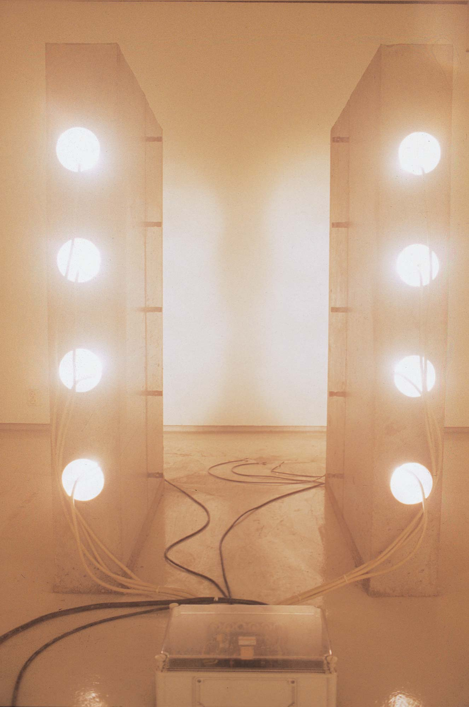
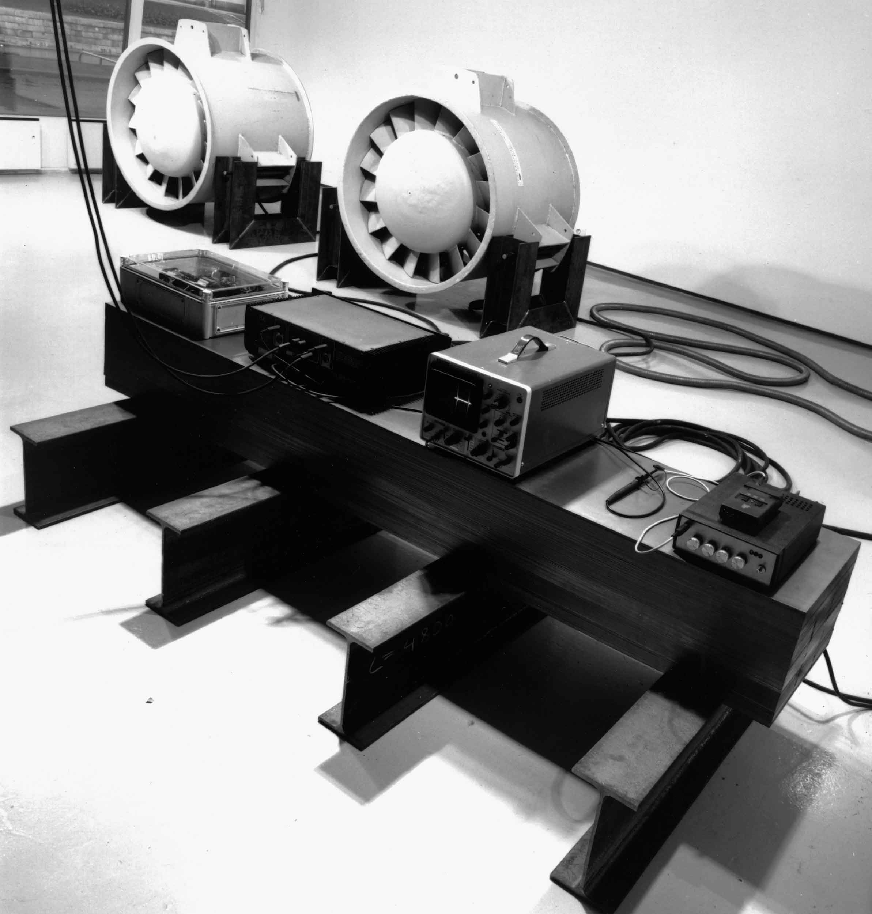

Gallery Titanik, Turku
1993
Industrial electric fans, concrete, steel tubes, halogen lights, steel profiles, steel sheets, sound
oscillator, oscilloscope, sound system, control unit, Geiger counter
The work occupied all three rooms at the gallery. The radioactive background radiation controlled the
functioning of all the different parts via a Geiger counter and control unit. Two large fans in the main
exhibition room came on and off at random, never reaching full speed before stopping. The second room
contained two concrete walls, cast on site, with steel tubes running through them. The tubes had halogen
lights inside them, which generated a lot of heat as well as light. A steel cube filled the third room. Inside
it were subwoofers playing low sine-wave tones, which made it vibrate visibly.
Dimensions variable

